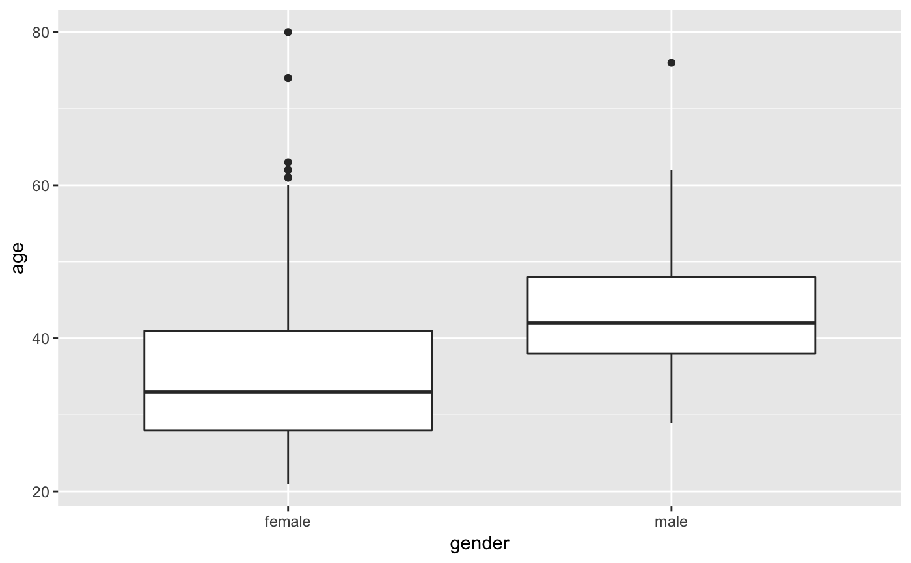
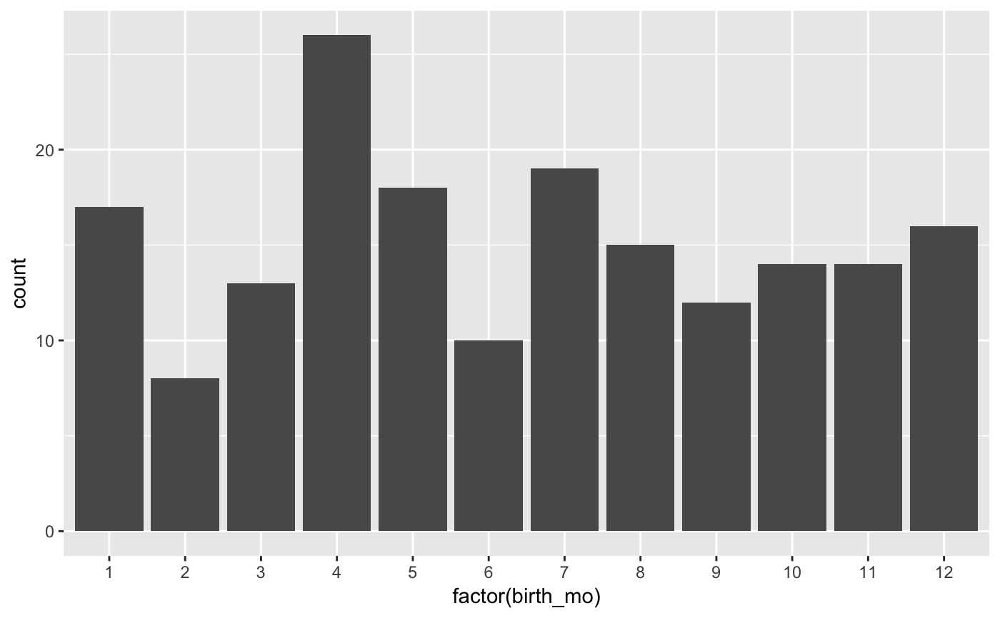

oscars.RdBest actor and actress Oscar winners from 1929 to 2012.
oscars
A tibble with 170 observations on the following 10 variables.
Denotes which Oscar ceremony.
Denotes which Oscar year.
Name of winning actor or actress.
Name of movie actor or actress got the Oscar for.
Age at which the actor or actress won the Oscar.
State where the actor or actress was born, country if foreign.
Birth month of actor or actress.
Birth day of actor or actress.
Birth year of actor or actress.
Journal of Statistical Education, http://www.amstat.org/publications/jse/datasets/oscar2009.dat.txt (no longer valid), updated through 2012 using information from Wikipedia.org.
Although there have been only 84 Oscar ceremonies until 2012, there are 85 male winners and 85 female winners because ties happened on two occasions (1933 for the best actor and 1969 for the best actress).
#> # A tibble: 49 x 2 #> birth_pl n #> <fct> <int> #> 1 England 25 #> 2 New York 23 #> 3 California 22 #> 4 Connecticut 5 #> 5 Pennsylvania 5 #> 6 Illinois 4 #> 7 Missouri 4 #> 8 New Jersey 4 #> 9 Ohio 4 #> 10 Wisconsin 4 #> # … with 39 more rows